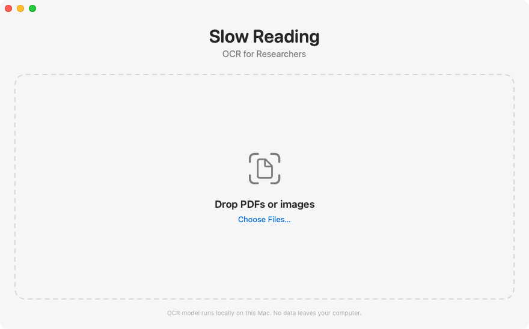
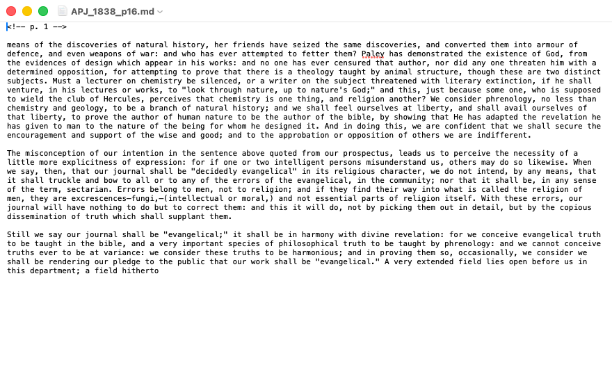

What it does
Drop in a PDF, a photo, or a folder of scans. Press Start. You get a text file of the transcription, saved in a folder next to the original.


Why it is different
Use your own computer. Don't send any data to AI companies.
Runs on your Mac
The reading is done by your own computer. After the first download, it works with no internet connection.
Private
Your scans never leave your Mac. There is no account, no upload and no tracking. This suits unpublished sources and archives with strict terms.
Open weights
It uses olmOCR 2 from Ai2, an openly published model (Apache 2.0). Anyone can inspect it, and the app's code is open too.
Free
No subscription, no per-page fees and no page limits. Read ten pages or ten thousand for the same price: nothing.
Modest energy
It runs on your Mac's own chip, and your scans are never uploaded. See the figures below.
Made for historians
Handles old print, handwriting, columns, footnotes and multi-page PDFs.
What 1,000 pages costs
An estimate for a typical printed page on a Mac with an M2 Max chip.
| Time | about 8 hours (roughly 30 seconds a page). |
|---|---|
| Money | £0 for the app. About 5p of electricity. |
| Energy | about 0.18 kWh |
| Carbon | about 24 g CO₂e, roughly the energy of boiling a full kettle once |
How these were worked out: 1,000 pages × 30 seconds ≈ 8.3 hours. Measured on a M2 Max with Apple's powermetrics tool, the chip (CPU and GPU) averaged about 22W while reading ≈ 0.18 kWh. UK figures: 0.131 kg CO₂e per kWh and 26p per kWh. A full kettle uses roughly 0.17 to 0.23 kWh. Speed varies with your Mac and the page. Your own electricity price and local grid will change the figures.
Getting started
- Download the app, unzip it, and drag Slow Reading into your Applications folder.
- On first launch the app downloads its model once (about 5 GB). After that it works offline.
- Drop in your files and press Start.